Fallout Tactics: Brotherhood of Steel
フォールアウト タクティクス：ブラザーフッド・オブ・スティール
Fallout Tactics: Brotherhood of Steel（略称：Fallout Tactics）は、Micro FortéおよびMicro Fortéの関連会社14° Eastが開発し、Interplay Entertainmentが発売したタクティカル・コンピュータRPGである。
2001年3月15日にリリースされた本作は、Falloutユニバースを舞台とする3番目のビデオゲームとなる。
ゲームプレイ
全般
Fallout Tacticsは、Falloutシリーズ初のノンスタンダードなCRPGであり、シリーズ初のマルチプレイヤーモードを搭載した作品である。
前2作のFalloutシリーズとは異なり、Fallout Tacticsではロールプレイよりもタクティカル・コンバットと戦略に重点が置かれている。
プレイヤーはNPCに対して返答することはできないが、交易やギャンブルは可能。
街の代わりに、ブラザーフッドのバンカーとミッションが中心となる。
バンカーは物資管理官、整備士、人事担当、衛生兵などのサービスを利用できる拠点として機能する。
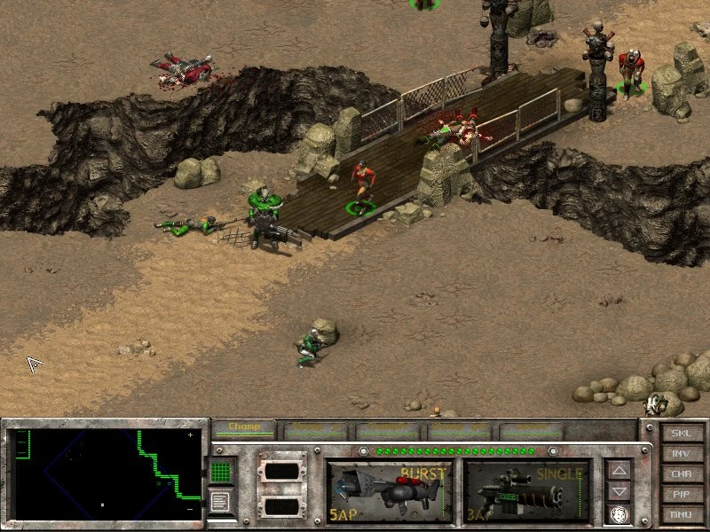
戦闘
Fallout Tacticsの戦闘は、前2作の個人ターンベース制とも、近年のリアルタイム制とも異なる独自のシステムを採用している。
3つの戦闘モードが搭載されている：
- CTB（Continuous Turn-Based） — 全員が同時に行動でき、APはアジリティに基づく速度で再生される
- ITB（Individual Turn-Based） — 初代Falloutと同じ個人ターンベース制
- STB（Squad Turn-Based） — 分隊単位でターンが回る変形制
その他、姿勢変更、高低差修正、セントリーモード（CTBで敵遭遇時に自動射撃）なども導入されている。
キャラクター作成・成長
プレイヤーキャラクターは一次ステータス、トレイト、スキル、パークを持ち、これらの数値によってアクションの成功率が数学的に決定される。
SPECIALキャラクターシステムが採用されている。
スキルは初代FalloutおよびFallout 2とほぼ同じだが、唯一の違いとしてスピーチが削除され、パイロットが追加されている。
種族
シングルプレイヤーの主人公は人間でなければならないが、リクルートやマルチプレイヤーでは以下の6種族が使用可能：
- ヒューマン — 最も汎用的。幅広い能力に特化可能。パークは3レベルごと
- スーパーミュータント — 戦闘に優れるが知性・敏捷性に欠ける。小火器は使用不可。パークは4レベルごと
- グール — 人間より力は劣るが幸運と知覚に優れる。極めて長い寿命。パークは4レベルごと
- デスクロー — 巨大で強力だが、ほとんどのアイテムや防具を使用できない。近接武器のみ。パークは4レベルごと
- ヒューマノイド・ロボット — 頑丈で毒と放射線に免疫。パーク取得不可
- ドッグ — 知覚と敏捷性に優れるが武器使用不可。キャンペーンではリクルート不可。パークは2レベルごと
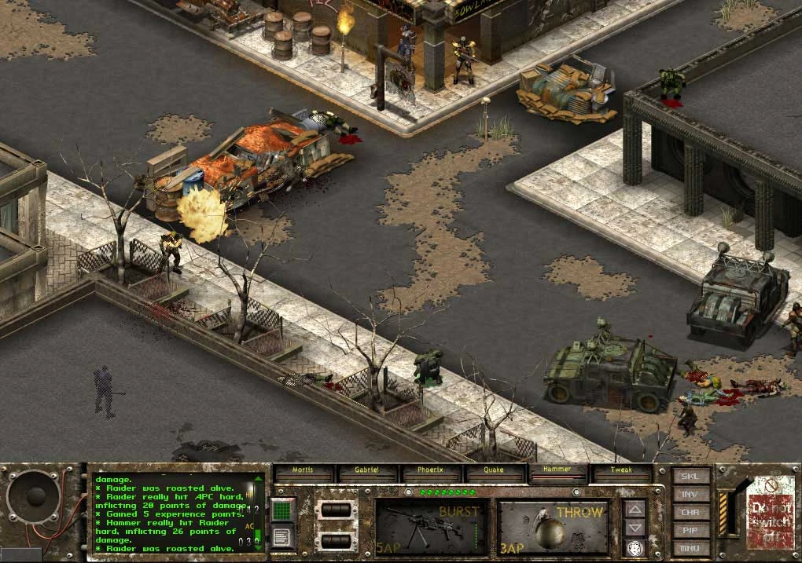
ストーリー
核戦争が世界を破壊した後、カリフォルニアの生き残りたちはVaultから出現し、高度な技術と軍用パワーアーマー、ハイテク兵器を手に、やがてブラザーフッド・オブ・スティールという国地方勢力へと発展した。
ブラザーフッドは新兵獲得の必要性を巡って内部対立が生じた。
部外者のトライバルの入団を支持する派閥と、純血主義を維持しようとする派閥に分かれたのだ。
結局、多数派は排他的方針を支持し、外部拡大を支持する少数派は巨大な飛行船で東方へ送り出され、崩壊したスーパーミュータント軍の残党を壊滅させることを命じられた。
しかし、壊滅的な雷嵐が船団を襲い、多くの飛行船と遠征のリーダーたちが失われた。
生存者たちはシカゴの廃墟の外に不時着し、本隊との連絡は不可能となった。
逆境にもかかわらず、ブラザーフッドは地元の住民と協力関係を構築し、保護と医薬品を提供する代わりに食料と労働力を得た。
本隊の制約的なイデオロギーから解放された中西部ブラザーフッド・オブ・スティールは、独自のアイデンティティを築き上げた。
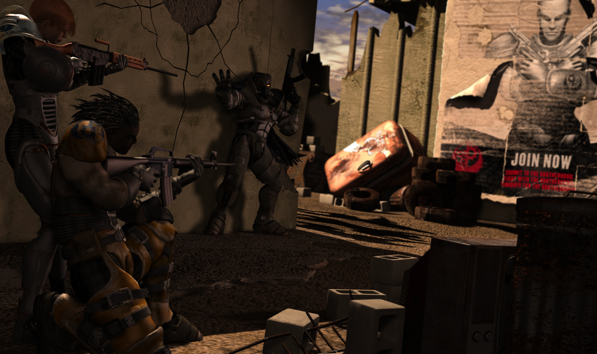
ゲームのプロットは2197年のアメリカ中西部を舞台とする。
プレイヤーキャラクターはウォリアーと呼ばれる新兵で、サイモン・バーナキー将軍の指揮の下、他のイニシエイトたちで構成された分隊を率いる。
ブラザーフッドは最初にレイダーの脅威に挑み、これを排除した後、次にウエイストランドの動物を精神的に操るビーストロードと呼ばれる超能力者たちと対峙する。
ビーストロードを壊滅させた後、次に本来の壊滅対象であったスーパーミュータント残党（ガモーリンの軍団）と衝突する。
セントルイス外での戦いでバーナキー将軍は捕虜となり、ミュータント軍団のリーダー「ガモーリン」の正体がかつてのブラザーフッドのパラディン、ラジアムであったことが判明する。
スーパーミュータント軍を打ち破った後、西からの新たな脅威が姿を現す――巨大なロボット軍団がアメリカ中西部を席巻し始めたのだ。
テクノロジーを崇拝するカルト集団リーバー・ムーブメントはブラザーフッドとロボット軍の間に挟まれ、やがてブラザーフッドに庇護を求める。
ロボット軍の出所はVault 0であり、カリキュレーターと呼ばれるコンピュータと人間の脳の融合体が指揮していることが明らかになる。
最終決戦ではシャイアン・マウンテンに攻め上り、鹵獲した核弾頭でVault 0に突入する。
エンディング
最終的にプレイヤーには以下の選択肢が与えられる：
- カリキュレーターを破壊する — Vault 0はブラザーフッドの新拠点となるが、最も貴重な資産であるカリキュレーターのデータバンクは失われる。ブラザーフッドはトライバルとの交易を深めつつ復興するが、西方への帰還は無期限に保留される。
- キャラクターの頭脳をカリキュレーターと融合させる — Vaultの全リソースが利用可能になり、数世紀ではなく数十年で復興が達成される。ただし、そのキャラクターのカルマがカリキュレーターの行動指針となる。
- 善カルマ → 全種族が協力する繁栄と調和の新時代
- 悪カルマ → ブラザーフッドのエルダーたちが謎の失踪を遂げ、カリキュレーターが力ずくで統合。反対者は排除される
- バーナキー将軍をカリキュレーターと融合させる — 純血人類の救済を目指すが、ミュータントは強制収容所に送られ、反逆者は磔にされる。やがてミュータント解放軍が結成されるなど、過激な結末を迎える。
音楽
ゲームサウンドトラックはイノン・ツールが作曲した。
本作はFalloutスタイルの背景音楽のみを収録しており、1940〜50年代のアンビエント音楽が収録されていない唯一のFalloutゲームである。
評価
Fallout Tactics: Brotherhood of SteelはMetacriticメタスコア82/100を獲得した。
舞台裏
- 2020年にエミル・パグリアルーロは、Fallout Tacticsの要素がその後の作品に組み込まれていると述べた。
一例として、Fallout 3やFallout 4で言及されるシカゴのB.O.S.分遣隊の存在がある。 - 2007年にBethesda Softworksのトッド・ハワードは、Bethesdaの目的上、Fallout Tactics内のストーリーは「起こらなかった」と述べた。
- クリス・テイラーは「Interplayがもっと時間と予算を許していれば、より良いゲームを届けられる状況だった」と述べている。
テスティングは「悲劇的に短く」、最初の完全プレイ可能なベータを受け取った土曜日から、わずか数日後の水曜日にマスタリングに送られたという。 - テイラーはまた、「TB（ターンベース）とRT（リアルタイム）の両方を実装すべきではなかった」と振り返り、QA時間と資源のかなりの部分を費やしたと述べている。
ギャラリー
プリリリース・開発中
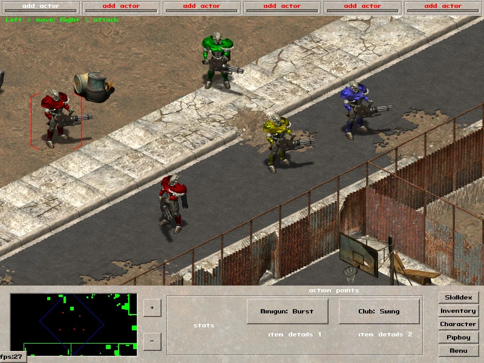
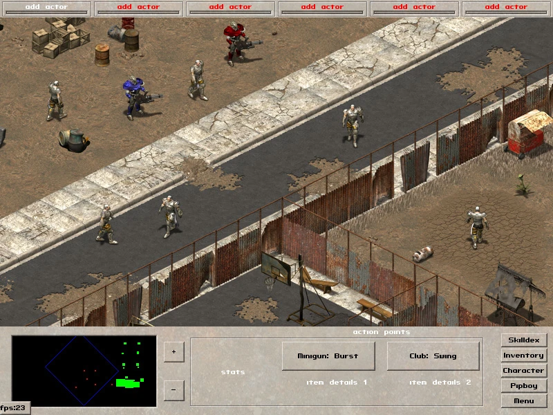
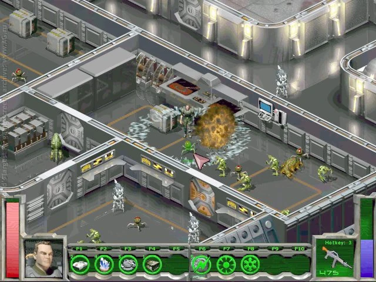
コンセプトレンダー
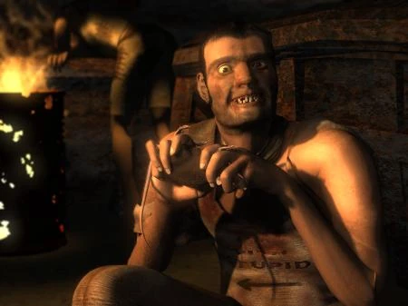
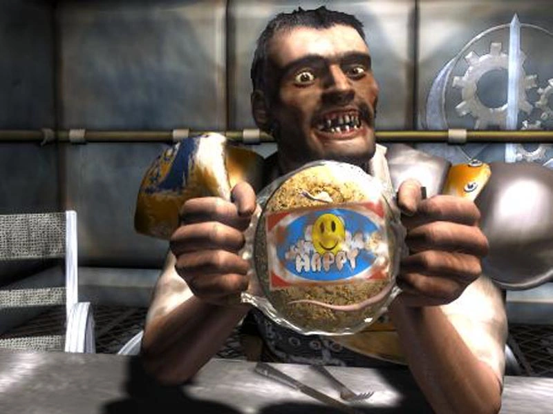
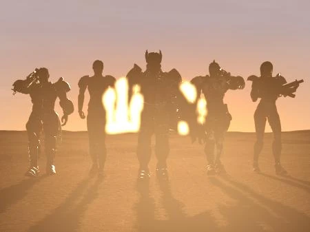
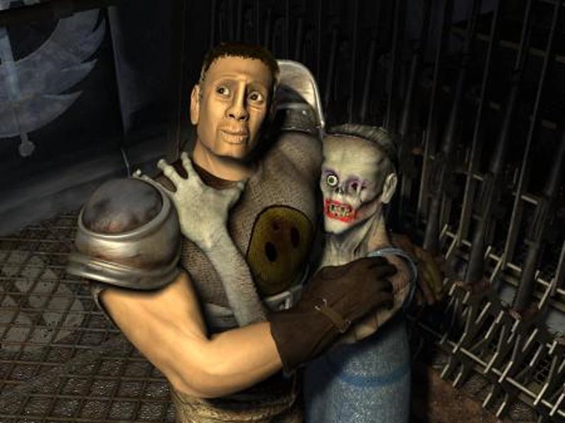
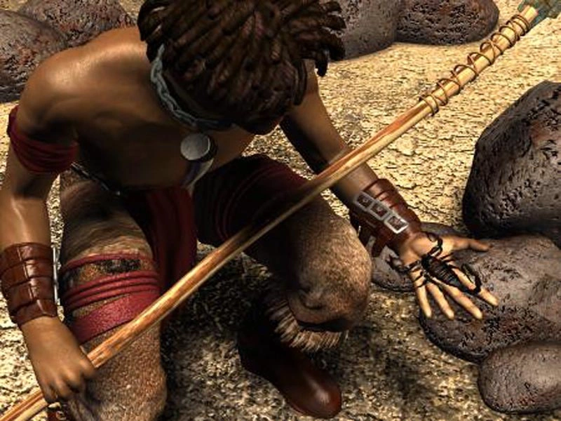
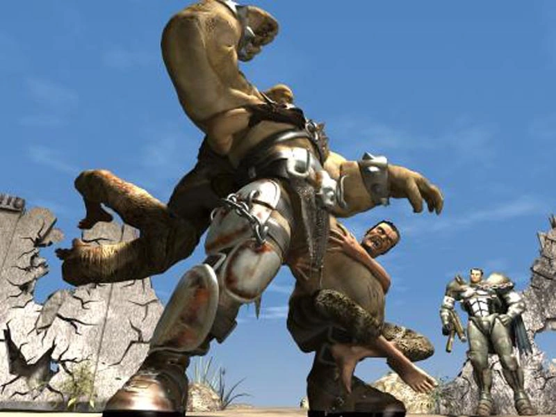
リリース
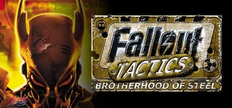
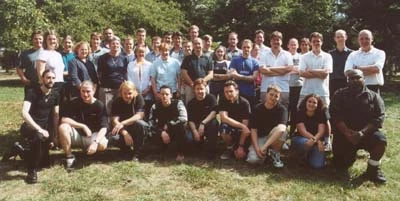
Fallout Tacticsは、Falloutシリーズの中でもかなり異色な存在ですよね〜。
初代FalloutとFallout 2がストーリー重視のRPGだったのに対して、こちらは分隊ベースのタクティカル戦闘に完全に振り切っている。
NPCと会話できない、街がない、ロールプレイよりも戦略。そのストイックなゲームデザインが逆に独特の魅力を生んでいるのが面白いなと思います。
ストーリー面では「中西部ブラザーフッド」という独自の組織が形成されていく過程がとても興味深いです。
本隊からはみ出し者として追い出された集団が、むしろ本隊よりも進歩的な組織になっていくっていうのは皮肉が効いているし、Falloutらしい展開ですよね。
レイダー→ビーストロード→スーパーミュータント→ロボット軍団と、段階的にスケールアップしていく敵勢力の構成も良くできています。
6種族が使える点も画期的で、デスクローやロボットで部隊を編成できるっていうのは他のFalloutにはない楽しさですよね。
3つの戦闘モード（CTB/ITB/STB）の設計も野心的。ただ、開発者自身が振り返って「TBとRTの両方を実装すべきではなかった」と言っているように、この野心がテスト不足を招いた面もあったようです。
正史かどうかの議論もまた面白くて、トッド・ハワードの「起こらなかった」発言がありつつも、エミル・パグリアルーロが「要素は組み込まれている」と言っているあたり、Bethesdaとしても完全には切り捨てていない絶妙な立ち位置にいる作品だと思います〜！
This article was created by translating and editing Fallout Tactics: Brotherhood of Steel from Nukapedia: The Fallout Wiki.
Licensed under the Creative Commons Attribution-Share Alike License (CC BY-SA 3.0).
コミュニティ維持のため、寄付を受け付けております。
> COMMENTS